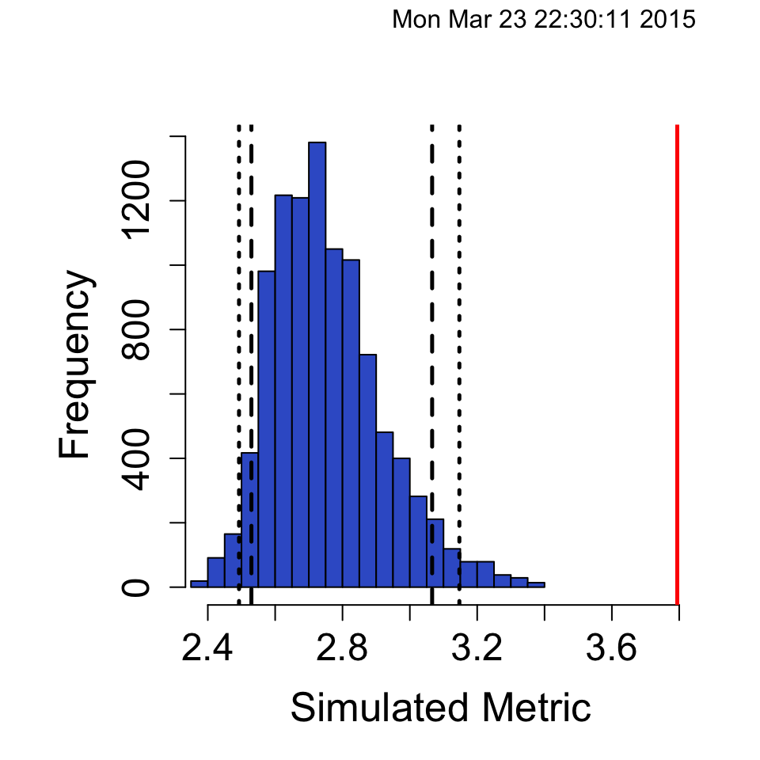
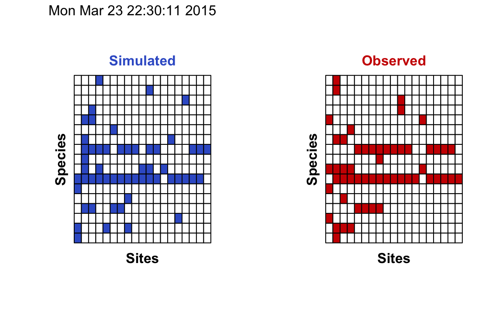

A software package to fit ecological null models
EcoSimR is an open source R version of the EcoSim software project, details about the package can be found in the full documentation
## Install development version
install.packages("devtools")
library(devtools)
install_github("gotellilab/EcoSimR")Co-Occurrence null model
Data for co-occurrence null models should be a species by site matrix of incidence data.
| Species | Cuba | Hispaniola | Jamaica | Puerto_Rico | Guadeloupe | Martinique | Dominica | St_Lucia | Barbados |
|---|---|---|---|---|---|---|---|---|---|
| Carduelis_dominicensis | 0 | 1 | 0 | 0 | 0 | 0 | 0 | 0 | 0 |
| Loxia_leucoptera | 0 | 1 | 0 | 0 | 0 | 0 | 0 | 0 | 0 |
| Volatinia_jacarina | 0 | 0 | 0 | 0 | 0 | 0 | 0 | 0 | 0 |
| Sporophila_nigricollis | 0 | 0 | 0 | 0 | 0 | 0 | 0 | 0 | 0 |
| Melopyrrha_nigra | 1 | 0 | 0 | 0 | 0 | 0 | 0 | 0 | 0 |
EcoSimR provides an easy way to plot and summarize output. We’ll use the SIM9 algorithm (See table 2 Gotelli 2000) and the C-Score metric (Stone and Roberts 1990).
finchMod <- cooc_null_model(dataWiFinches, algo="sim9",nReps=10000,burn_in = 500)## Summary and plot info
summary(finchMod)## Time Stamp: Mon Mar 23 22:10:59 2015
## Reproducible:
## Number of Replications:
## Elapsed Time: 1.8 secs
## Metric: c_score
## Algorithm: sim9
## Observed Index: 3.7941
## Mean Of Simulated Index: 2.7487
## Variance Of Simulated Index: 0.028048
## Lower 95% (1-tail): 2.5147
## Upper 95% (1-tail): 3.0735
## Lower 95% (2-tail): 2.4779
## Upper 95% (2-tail): 3.1324
## Lower-tail P > 0.9999
## Upper-tail P < 1e-04
## Observed metric > 10000 simulated metrics
## Observed metric < 0 simulated metrics
## Observed metric = 0 simulated metrics
## Standardized Effect Size (SES): 6.2422plot(finchMod,type="hist")
See a plot of the actual matrix compared to a single simulated matrix
plot(finchMod,type="cooc")